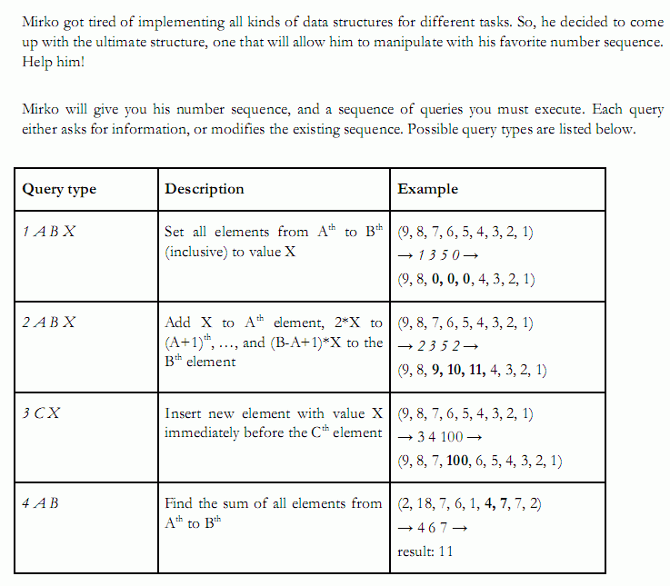
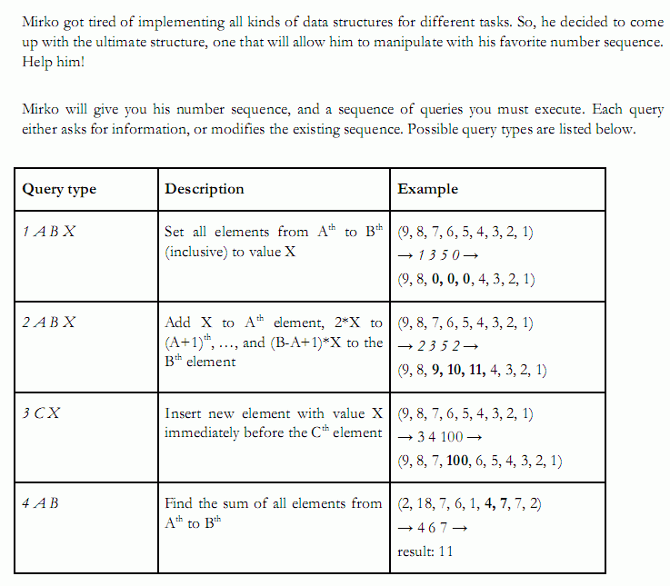

你需要维护一个序列，支持以下4种操作。一，将区间(u,v)的数覆盖为C；二，
将区间(u,v)的数依次加上一个以C为首项、C为公差的等差数列；三，将数C插入
第i个位置；四，查询区间(u,v)的数的和。序列最初有n个数，一共会有Q次操
作。保证结果在longlong范围内。
| F.A.Qs | Home | Discuss | ProblemSet | Status | Ranklist | Contest | 入门OJ | ModifyUser Xeonacid | Logout | 捐赠本站 |
|---|

你需要维护一个序列，支持以下4种操作。一，将区间(u,v)的数覆盖为C；二，
将区间(u,v)的数依次加上一个以C为首项、C为公差的等差数列；三，将数C插入
第i个位置；四，查询区间(u,v)的数的和。序列最初有n个数，一共会有Q次操
作。保证结果在longlong范围内。
n, Q <= 100,000.